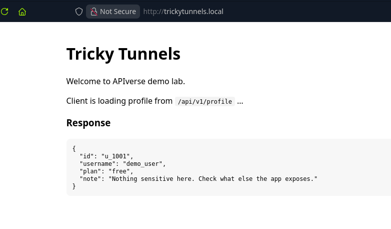
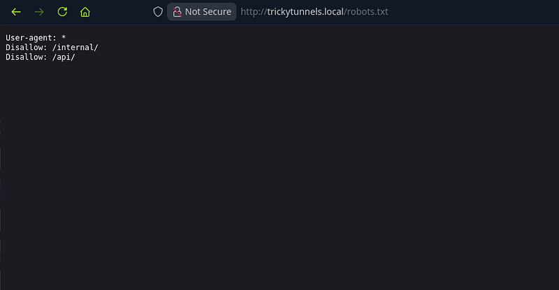
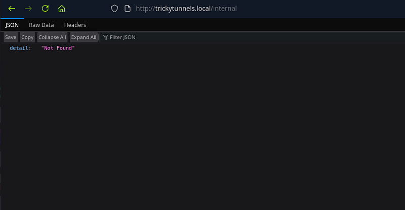
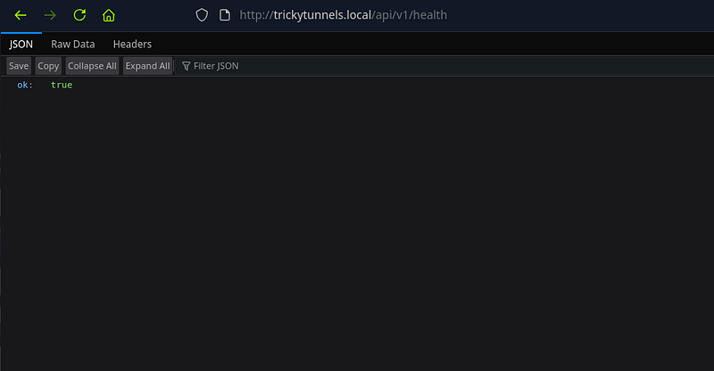
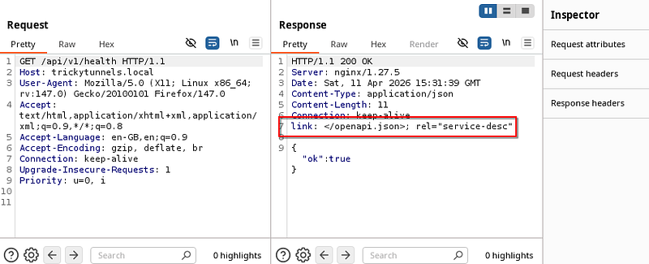
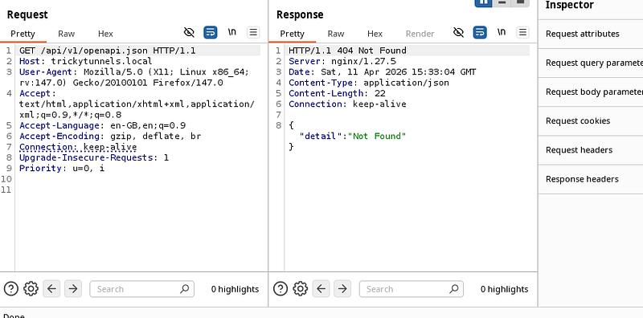
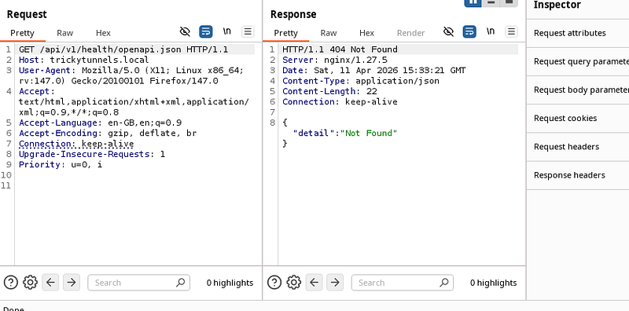
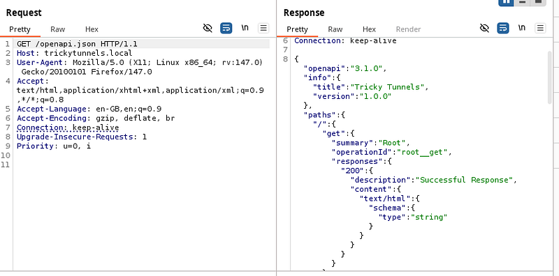
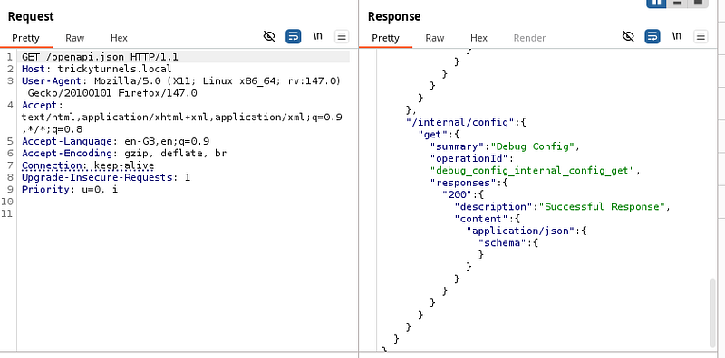
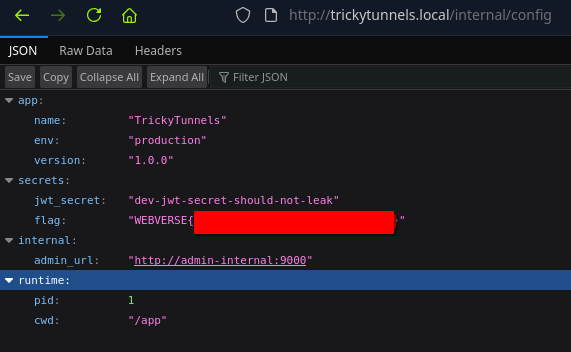

OSCP · OSWP · PWPP · PWPA · PAPA · EnCE · Linux+ · LPIC-1 · Network+ · Security+ · Pentest+ · eJPT · eWPT · BSc · PGCert
Tricky Tunnels
WebVerse is a new platform by Leighlin Ramsay. I saw it pop up in my feed and before long, was talking to Leighlin who was kind enough to offer me the ability to get Pro membership to test out his labs in return for some thoughts/feedback. Please note: all opinions are my own and I have not been paid in any way, shape, or form for this review and walkthrough. You can get to WebVerse here: https://www.webverselabs-pro.com
Step 1: Tricky Tunnels
I set my /etc/host file and then took a look at trickytunnels.local. I immediately was drawn to the “/api/v1/profile” and kept note of that.
The response note said that there was nothing sensitive and to check what else the app exposes.

With some basic enumeration, I found robots.txt which showed /internal/ and /api/ existed within the app:

Browsing to /internal/ returned a response saying detail: Not found.
Hmm. Ok. Where should I go next?

Remember just earlier, we saw /api/v1/profile ? Well, I figured that we could either run a wordlist on this, or just simply look at common endpoints. I started with health since health is a common one.
Now i’ll be honest. This was sheer luck for me. Would I have checked health usually? I’m not sure. But this is why this lab serves as a good reminder: always check common endpoints in APIs.

Step 2: Deeper Inspection
Now, you may be fooled into thinking the health endpoint is a dead end. I was too. Until I looked in burp’s history and saw the response.
There was a link header with /openapi.json which looked interesting to say the least. The link header tells you (and any automated client) where to find the machine-readable description of the API you just called. So, it seems like we should manually browse to it.

I tried appending it to v1. No dice:

I tried appending it to health. No dice:

I tried to directly browse to it and got a response.

Step 3: Grabbing the flag
The response was an OpenAPI 3.1.0 specification (in JSON format) for an API called “Tricky Tunnels”. In other words, it’s a map of the API’s endpoints, methods, and response types.
The one that looked the most intriguing was:
GET /internal/config – “Debug Config”. The spec said that it returns: application/json
Usually, internal/debug endpoints expose configuration details.

So I browsed to /internal/config inside the bowser and got the flag:

Thoughts?
All in all? Excellent lab. The lab’s difficulty was correctly rated. No obscure or complex vulnerabilities were required for this one. This was purely a case of misconfiguration and lack of authentication means that anyone can browse to the endpoint and see the JWT secret. This means any user can forge a JWT token (hint: this is dangerous).
What I liked about this, is that after I solved it, WebVerse has an “official” solution which shows the way the lab creator intended it to be solved. The lab creator wanted to use this lab to teach people that having a misconfigured API can be very bad news. The lab contained: “No authentication. No IP restriction. No rate limiting. The endpoint returns a complete environment dump in a single unauthenticated GET request.”
I’m looking forward to testing more labs from WebVerse.